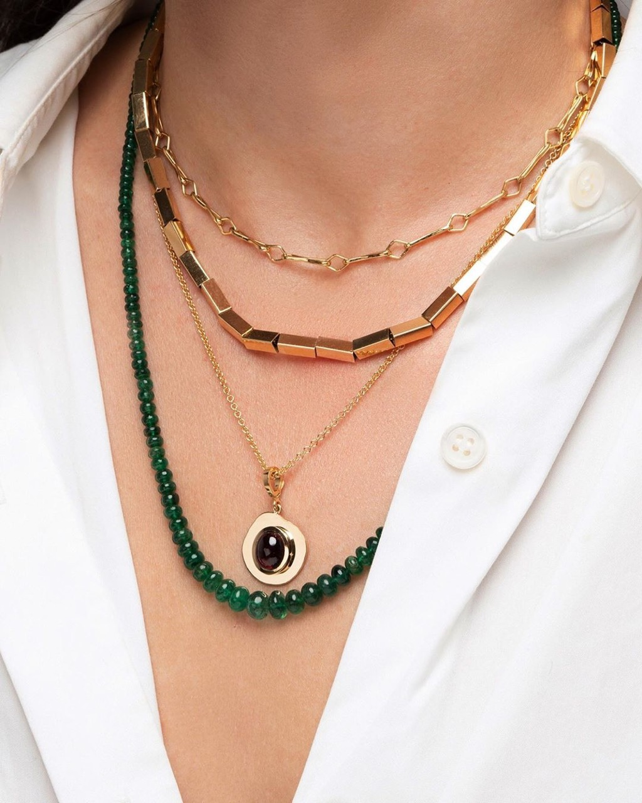

Ink wash painting, rooted in East Asian artistic traditions, employs fluid ink applications and water manipulation to create images emphasizing gesture, movement, and the interaction between pigment and substrate. Contemporary ink painters inherit centuries of refinement in technique while introducing innovations and engaging with conceptual frameworks of contemporary art practice. Ink wash painting's emphasis on spontaneity and acceptance of accidents distinguishes it from Western painting traditions, permitting artists to work in responsive, improvisational modes. The medium's capacity for extraordinary expressive power through apparently simple means demonstrates that artistic sophistication transcends technical elaboration.
This Jewelry Brand Is Worn By Your Favorite Celebrities

Previous articleStefano Marra’s Graphic Illustrations Deserve More Love
Next articleHere’s Another Illustrator You Should Follow